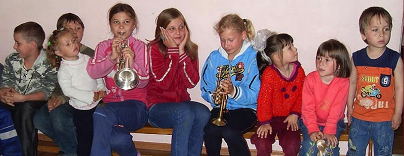

NEWS
Twin Towns Fund Newsletter, Chistmas 2009
Dear Friends and Supporters,
This is our Christmas update on the work of our Charity Town Fund, and its work in Novgorod, Russia.
The beggining of this year saw us doing fundraising concerts for our week long trip to Novgorod in May. With your massive help, we managed to raise a staggering 10,000 dollars to take to needy places.
Our trip started early on Sunday 24th May, loading up a minibus and van with huge amoynt of equipment, and suitcases full of clothes and gifts to give away. The journey went smoothly, except for the usual 2 hour hold up at Novogorod airport because of taking the expensive string instruments in. We thought we were well prepared, but as usual the paperwork was not enough! We filled in about 5 customs forms each before we managed to get it right! As usual, we received an extremely warm welcome from the families we stay with.
Monday 25th we set off to the Tuberculosis Centre for children. We saw noticeable improvements since last time, and as always Xena and the children gave us a wonderful welcome. We played music, acted out a bible story with musical effects, prayed for them and painted their faces. They sang us some beautiful songs they had prepared.
